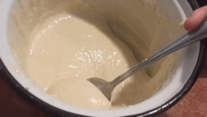

Składniki:
- 1 kefir (400g)
- cukier waniliowy
- 2 płaskie łyżki cukru
- mąka
- 2 jajka
- 1 płaska łyżeczka sody oczyszczonej
Kefir, cukry i jajka zmiksować. Dodawać mąki do zgęstnienia. Dodać sodę i chwilę odczekać. Smażyć na oleju na małym ogniu.
